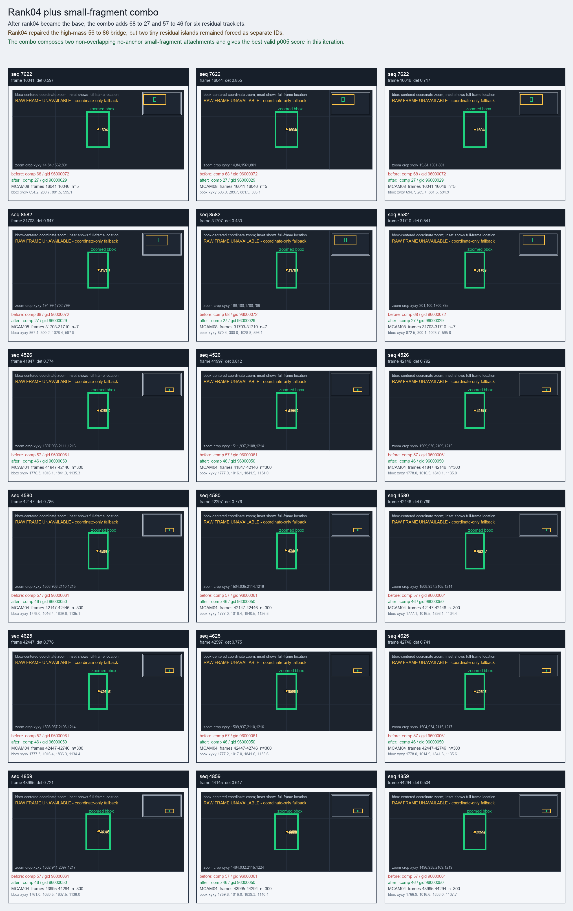

Rank04 plus small-fragment combo
After rank04 became the base, the combo adds 68 to 27 and 57 to 46 for six residual tracklets.
Before
component 68, gid 96000072, component_size 2
component 68, gid 96000072, component_size 2
After
component 27, gid 96000029, component_size 178, decision_status manifest_reassign
component 27, gid 96000029, component_size 178, decision_status manifest_reassign
Evidence
target_sim=0.0000, target_margin=0.0000, source_rest_margin=0.0000
Raw frame
unavailable_coordinate_fallback
target_sim=0.0000, target_margin=0.0000, source_rest_margin=0.0000
Raw frame
unavailable_coordinate_fallback
Failure and fix
Old failure: Rank04 repaired the high-mass 56 to 86 bridge, but two tiny residual islands remained forced as separate IDs.
New implementation: The combo composes two non-overlapping no-anchor small-fragment attachments and gives the best valid p005 score in this iteration.
BBox evidence

Moved tracklets
| seq | video | gid | component | frames | dets |
|---|---|---|---|---|---|
| 7622 | vlincs_MS01_MC0001_MCAM08_2024-03-Tc6 | 96000072 -> 96000029 | 68 -> 27 | 16041-16046 | 5 |
| 8582 | vlincs_MS01_MC0001_MCAM08_2024-03-Tc6 | 96000072 -> 96000029 | 68 -> 27 | 31703-31710 | 7 |
| 4526 | vlincs_MS01_MC0001_MCAM04_2024-03-Tc6 | 96000061 -> 96000050 | 57 -> 46 | 41847-42146 | 300 |
| 4580 | vlincs_MS01_MC0001_MCAM04_2024-03-Tc6 | 96000061 -> 96000050 | 57 -> 46 | 42147-42446 | 300 |
| 4625 | vlincs_MS01_MC0001_MCAM04_2024-03-Tc6 | 96000061 -> 96000050 | 57 -> 46 | 42447-42746 | 300 |
| 4859 | vlincs_MS01_MC0001_MCAM04_2024-03-Tc6 | 96000061 -> 96000050 | 57 -> 46 | 43995-44294 | 300 |